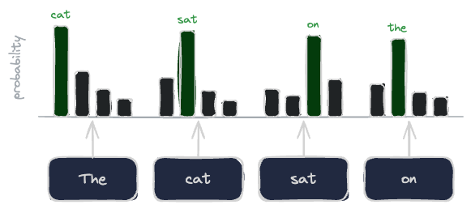
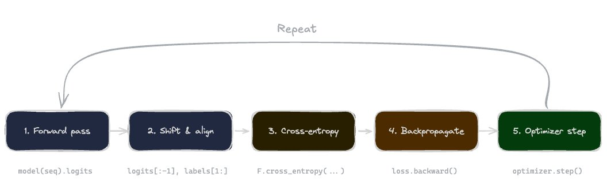

这是「训练智能体」系列的第一篇，后面会配文章和直播逐步加深；第一场直播的主题是用自己跑出来的traces微调智能体，完整录像已经放到YouTube频道。
SFT做的事就是模仿：给模型成对的提示和回答，让它学会在看到提示时把对应回答产出来。这些内容我在hf.co/learn上写过，这里只留一个最小版本。文章用纯PyTorch搭一个不到100行、不套任何训练框架的SFT循环，为的是让你看清训练信号到底是什么、它怎么改变模型。
例子跑在一张16 GB显存的GPU上，免费或低价的云端notebook就能提供这种配置。模型选Qwen3-0.6B，小到可以快速反复迭代。这里的目标是看清机制，而不是真训出一个强模型。
依赖只有几个：
pip install torch transformers用bfloat16加载模型，然后放到GPU上：
import torch
from transformers import AutoModelForCausalLM, AutoTokenizer
model_name = "Qwen/Qwen3-0.6B"
tokenizer = AutoTokenizer.from_pretrained(model_name)
model = AutoModelForCausalLM.from_pretrained(model_name, dtype=torch.bfloat16).to("cuda")token是文本的一个片段，通常是一个词或词元，分词器把它映射成一个整数。语言模型读入一串token，在每个位置上输出一个关于下一个token的概率分布。下图用四token序列说明这件事：每个位置读取它之前的全部token，预测紧随其后的那一个。

训练把这些预测当作监督信号。每个位置上模型有一个预测分布，也有一个目标，也就是真实出现的下一个token，损失就是两者之间的交叉熵。模型自信而且预测正确时，损失接近零；同样是自信但预测错了，损失就更大。
这就是SFT里全部的学习信号。它没有单独区分「好答案」和「坏答案」，只有示范里写明应该出现的下一个token。由于信号是逐token的，回答里每一个token都会贡献一份梯度。
一条SFT样本由两部分组成。提示是输入，比如用户的问题；回答是你希望模型产出的内容。放到智能体场景里，这两部分被打包进traces。你要让模型学会生成回答，而不是重新生成提示，所以损失只应该落在回答token上。
掩码就是用来做这件事的。把提示和回答拼成一条序列喂给模型，同时告诉损失忽略提示所在的位置。PyTorch的交叉熵用一个哨兵标签 -100来实现，遇到它直接跳过。掩码示意图展示了这种对齐关系：输入行是提示token接回答token，标签行在提示位置全是 -100，在回答位置是对应的真实token id。
下面这段代码把聊天模板套到一段短对话上，再根据assistant掩码构造标签：
messages = [
{"role": "user", "content": "Summarize in one word: always keep answers concise."},
{"role": "assistant", "content": "Concise."},
]
enc = tokenizer.apply_chat_template(
messages,
return_dict=True,
return_assistant_tokens_mask=True,
return_tensors="pt",
).to("cuda")
input_ids = enc["input_ids"]
assistant_masks = torch.tensor(enc["assistant_masks"], device="cuda")
labels = input_ids.clone()
labels[assistant_masks == 0] = -100messages列表保存整段对话，每一轮一个dict。apply_chat_template把它渲染成一条完整的token序列，return_assistant_tokens_mask标出哪些token属于assistant的输出。其余位置一律置为 -100。
这个循环有五个步骤，示意图里画了出来：把序列送进模型拿到logits，错开logits和标签让每个位置对齐它所预测的token，计算交叉熵，反向传播，然后推进一步优化器。

logits输出时每个输入位置对应一个分布。位置t预测的是位置t+1的token，所以丢掉最后一个logit和第一个标签，两者就对齐了：
import torch.nn.functional as F
optimizer = torch.optim.AdamW(model.parameters(), lr=1e-5)
model.train()
for step in range(30):
logits = model(input_ids).logits # (1, T, vocab_size)
shift_logits = logits[:, :-1, :] # drop last position
shift_labels = labels[:, 1:] # drop first label
loss = F.cross_entropy(
shift_logits.reshape(-1, shift_logits.size(-1)),
shift_labels.reshape(-1),
ignore_index=-100, # skip masked tokens
)
loss.backward()
optimizer.step()
optimizer.zero_grad()这就是一个完整的SFT步骤。loss.backward() 为每个权重填上损失的梯度，optimizer.step() 顺着梯度迈一小步把损失压低。这里把交叉熵完整写出来，是为了让错位和掩码不被藏在函数里。
SFT的本质是模仿：把该做的事演示给模型看，再训练它照着复制。机制是带掩码的下一token预测，回答的每个token贡献一项交叉熵和一个梯度，提示一个都不贡献。它能力的天花板由数据决定，因为只靠SFT训出来的模型，无法稳定产出示范里从未出现过的行为。
这让SFT稳定且样本效率高，也让它的成本等于写好并验证回答的成本。能演示出想要的输出时，SFT就是最简单可行的工具；只能给行为打分、却很难演示出最优版本时，就该轮到强化学习了，不过那是另一篇文章的话题。
参考：https://x.com/ben_burtenshaw/status/2067615361428545566